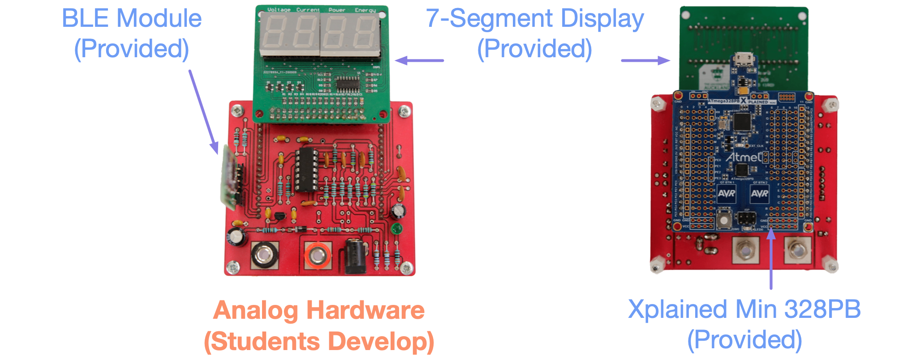
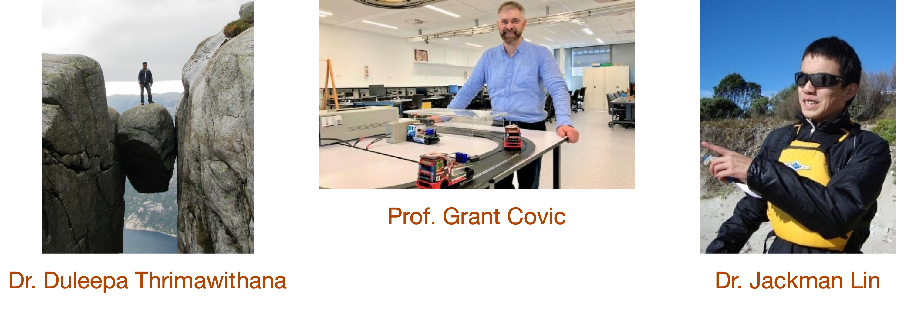
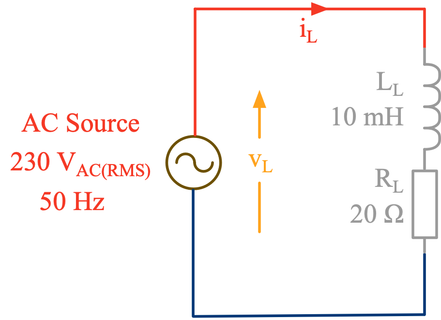
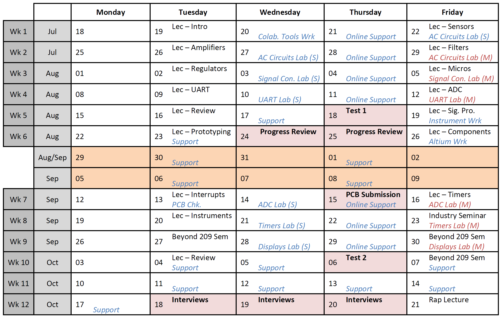

class: title-slide count: false .logo-title[] ## ELECTENG 209 # Analog & Embedded Software Design ### Your First *Real* Design Course .TitleAuthor[Duleepa J Thrimawithana] --- layout: true name: template_slide .logo-slide[] .footer[[Duleepa J Thrimawithana](https://www.linkedin.com/in/duleepajt), Department of Electrical, Computer and Software Engineering (2022)] --- name: S1 # What is this Course About? - Students, in **teams of 4**, will design and build a smart energy monitor .center[  ] --- name: S2 # Who Are the Staff? - You will be looked after by 3 lecturers who work on real engineering projects with industry, 2 technicians and 22 teaching assistants (PhDs and UGs who have previously done this course) .center[  ] --- name: S3 # Why is this Course So Important? ```c if( electeng209_final_grade <= 'D+' ){ years_to_complete_my_degree += 1; repeat_electeng209(); } ``` .left-column[ - You cannot take the design papers in the 3rd and 4th years without passing ELECTENG 209 - You will have to pass ELECTENG 209 if you want to graduate - Having a good grade in design courses help get very good jobs - Your job interviewers usually love to see things you have designed and built - ELECTENG 209 is usually rated among the top highlights of your degree (check the student blogs) ] .right-column[ <br> .center[ <img src="img/CSPhotos.png" width="350"> ] ] --- name: S4 # Why am I Here Today? - To tell you that it is easy to get an A in ELECTENG 209 if you do not forget the key learnings from ELECTENG 291 and COMPSYS 201 - In fact, all your future design courses will require you to remember these key learnings - Topics that you want to pay special attention to are (for ELECTENG 209) - Circuit analysis techniques (e.g., KVL, KCL, Norton, Thevenin, DC circuits, AC circuits, superposition, frequency response, etc.) - OpAmp circuits and how to analyze them - Firmware development for AtMega 328PB microcontroller and shift registers .center[  ] --- name: S5 # Where to Find More Information? - ELECTENG 209 course is already published in Canvas and has a final draft of the course outline - Course webpage, https://uoa-ece209.github.io/, has most of the lecture notes and a lot of extra information - Soon you be added to Slack where you will be able to communicate with us and other students .center[  ] --- class: title-slide layout: false count: false .logo-title[] # Questions?